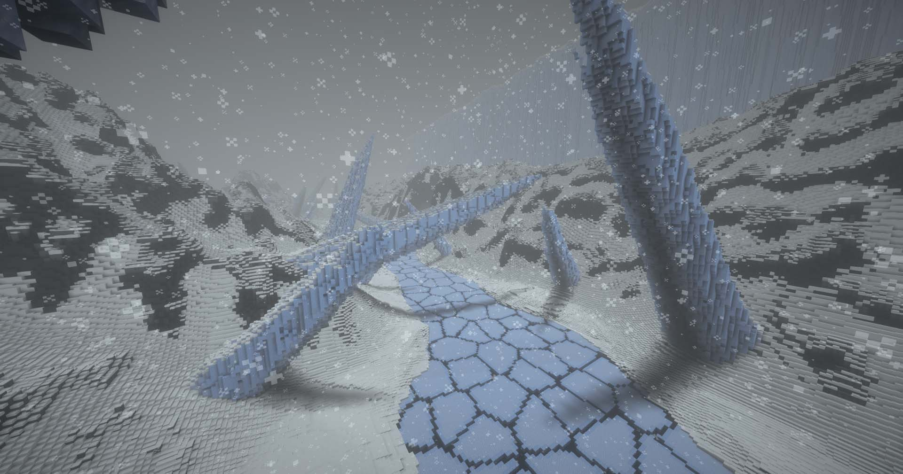

Identify potential energy sources suitable for cold, harsh environments and explain how these energy sources can be used to generate electricity in a frozen landscape.
Design and construct essential infrastructure to support life in extreme cold while considering the constant snowstorms and blizzards.
Create human necessities for the ship's survivors by building production facilities adaptable in a polar climate.
Analyze the environmental challenges such as extreme cold and blizzards while developing solutions for survival in these harsh conditions.

Nivora-IV Map
Nivora-IV Guiding Questions
What infrastructure is needed to keep a human settlement heated and protected from extreme cold?
How can you design a system to provide clean water by melting ice or using geothermal sources?
What challenges does the frozen surface of Nivora-IV present to food production, and could greenhouses or hydroponic systems be designed to grow food in this environment?
How can buildings and infrastructure be designed to resist or adapt to the planet’s extreme climate?